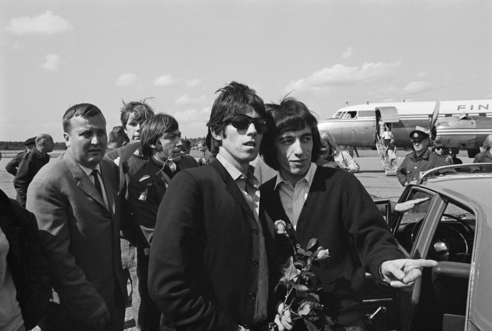

1965 music crowned a song that never reached number one.
Sam the Sham and the Pharaohs' Wooly Bully finished the year as Billboard's top single after peaking at number two.
The Beatles took five Hot 100 number ones and 12 weeks on top, double any other act.
Herman's Hermits put three songs in the year-end top 25, and five in the top 100.
Listen to 1965 Music
25 of 1965's biggest hits are playable below, from Billboard's year-end top 100 for 1965.
Press play on any row, or use Play All to run the whole list.
| # | Title | Artist | Chart Peak | Genre |
|---|---|---|---|---|
| Wooly Bully | Sam the Sham and the Pharaohs | No. 2 | Garage & Surf Rock | |
| I Can't Help Myself (Sugar Pie Honey Bunch) | Four Tops | No. 1, 2 wks | Motown, Soul & R&B | |
| (I Can't Get No) Satisfaction | The Rolling Stones | No. 1, 4 wks | British Invasion | |
| You Were on My Mind | We Five | No. 3 | Folk Rock | |
| You've Lost That Lovin' Feelin' | The Righteous Brothers | No. 1, 2 wks | Pop & Brill Building | |
| Downtown | Petula Clark | No. 1, 2 wks | British Invasion | |
| Help! | The Beatles | No. 1, 3 wks | British Invasion | |
| Can't You Hear My Heartbeat | Herman's Hermits | No. 2 | British Invasion | |
| Crying in the Chapel | Elvis Presley | No. 3 | Gospel | |
| My Girl | The Temptations | No. 1, 1 wk | Motown, Soul & R&B | |
| Help Me, Rhonda | The Beach Boys | No. 1, 2 wks | Garage & Surf Rock | |
| King of the Road | Roger Miller | No. 4 | Country | |
| The Birds and the Bees | Jewel Akens | No. 3 | Pop & Brill Building | |
| Hold Me, Thrill Me, Kiss Me | Mel Carter | No. 8 | Jazz & Easy Listening | |
| Shotgun | Junior Walker & the All Stars | No. 4 | Motown, Soul & R&B | |
| I Got You Babe | Sonny & Cher | No. 1, 3 wks | Folk Rock | |
| This Diamond Ring | Gary Lewis & the Playboys | No. 1, 2 wks | Pop & Brill Building | |
| The 'In' Crowd | Ramsey Lewis Trio | No. 5 | Jazz & Easy Listening | |
| Mrs. Brown, You've Got a Lovely Daughter | Herman's Hermits | No. 1, 3 wks | British Invasion | |
| Stop! In the Name of Love | The Supremes | No. 1, 2 wks | Motown, Soul & R&B | |
| Unchained Melody | The Righteous Brothers | No. 4 | Pop & Brill Building | |
| Silhouettes | Herman's Hermits | No. 5 | British Invasion | |
| I'll Never Find Another You | The Seekers | No. 4 | Folk Pop | |
| Cara Mia | Jay and the Americans | No. 4 | Pop & Brill Building | |
| Mr. Tambourine Man | The Byrds | No. 1, 1 wk | Folk Rock |

Table of Contents
- Listen to 1965 Music
- 1965 Music's Billboard Hot 100 Number Ones
- Key Albums Released in 1965
- Notable Events in 1965
- Genre Shifts in 1965 Music
- Play 1965 on the Radio Dial
- FAQ
1965 Music's Billboard Hot 100 Number Ones
Fourteen acts reached the top of the Billboard Hot 100 for the first time in 1965.
Six of them were British acts, led by the Rolling Stones and the Dave Clark Five.
The Beatles still led the year with 12 weeks at number one, double any other act.
| Title | Artist | Chart | Peak Date | Weeks at #1 in 1965 |
|---|---|---|---|---|
| I Feel Fine | The Beatles | Billboard Hot 100 | Jan 2, 1965 | 2 (from 1964) |
| Come See About Me | The Supremes | Billboard Hot 100 | Jan 16, 1965 | 1 (return) |
| Downtown | Petula Clark | Billboard Hot 100 | Jan 23, 1965 | 2 |
| You've Lost That Lovin' Feelin' | The Righteous Brothers | Billboard Hot 100 | Feb 6, 1965 | 2 |
| This Diamond Ring | Gary Lewis & the Playboys | Billboard Hot 100 | Feb 20, 1965 | 2 |
| My Girl | The Temptations | Billboard Hot 100 | Mar 6, 1965 | 1 |
| Eight Days a Week | The Beatles | Billboard Hot 100 | Mar 13, 1965 | 2 |
| Stop! In the Name of Love | The Supremes | Billboard Hot 100 | Mar 27, 1965 | 2 |
| I'm Telling You Now | Freddie and the Dreamers | Billboard Hot 100 | Apr 10, 1965 | 2 |
| The Game of Love | Wayne Fontana and the Mindbenders | Billboard Hot 100 | Apr 24, 1965 | 1 |
| Mrs. Brown, You've Got a Lovely Daughter | Herman's Hermits | Billboard Hot 100 | May 1, 1965 | 3 |
| Ticket to Ride | The Beatles | Billboard Hot 100 | May 22, 1965 | 1 |
| Help Me, Rhonda | The Beach Boys | Billboard Hot 100 | May 29, 1965 | 2 |
| Back in My Arms Again | The Supremes | Billboard Hot 100 | Jun 12, 1965 | 1 |
| I Can't Help Myself (Sugar Pie Honey Bunch) | Four Tops | Billboard Hot 100 | Jun 19, 1965 | 2 (not consecutive) |
| Mr. Tambourine Man | The Byrds | Billboard Hot 100 | Jun 26, 1965 | 1 |
| (I Can't Get No) Satisfaction | The Rolling Stones | Billboard Hot 100 | Jul 10, 1965 | 4 |
| I'm Henry VIII, I Am | Herman's Hermits | Billboard Hot 100 | Aug 7, 1965 | 1 |
| I Got You Babe | Sonny & Cher | Billboard Hot 100 | Aug 14, 1965 | 3 |
| Help! | The Beatles | Billboard Hot 100 | Sep 4, 1965 | 3 |
| Eve of Destruction | Barry McGuire | Billboard Hot 100 | Sep 25, 1965 | 1 |
| Hang On Sloopy | The McCoys | Billboard Hot 100 | Oct 2, 1965 | 1 |
| Yesterday | The Beatles | Billboard Hot 100 | Oct 9, 1965 | 4 |
| Get Off of My Cloud | The Rolling Stones | Billboard Hot 100 | Nov 6, 1965 | 2 |
| I Hear a Symphony | The Supremes | Billboard Hot 100 | Nov 20, 1965 | 2 |
| Turn! Turn! Turn! (To Everything There Is a Season) | The Byrds | Billboard Hot 100 | Dec 4, 1965 | 3 |
| Over and Over | The Dave Clark Five | Billboard Hot 100 | Dec 25, 1965 | 1 |
The Supremes Make It Five in a Row
Back in My Arms Again reached number one on June 12.
It was the Supremes' fifth consecutive chart-topper, a first for any act.
I Hear a Symphony made it six in a row in November.
Key Albums Released in 1965
Five albums stand out from 1965.
- Bringing It All Back Home, Bob Dylan, Columbia Records (released March 22, 1965): includes Subterranean Homesick Blues and Mr. Tambourine Man.
- Help!, The Beatles, Parlophone Records (released August 6, 1965, UK): soundtrack to their second film.
- Highway 61 Revisited, Bob Dylan, Columbia Records (released August 30, 1965): opens with Like a Rolling Stone.
- Otis Blue, Otis Redding, Volt Records (released September 15, 1965): includes a cover of Satisfaction.
- Rubber Soul, The Beatles, Parlophone Records (released December 3, 1965, UK): features sitar on Norwegian Wood.
Dylan Plugs In
Dylan played an electric set with the Paul Butterfield Blues Band at the Newport Folk Festival on July 25.
The crowd booed.
Like a Rolling Stone went on to peak at number two on the Hot 100 that September.
Notable Events in 1965
- Keith Richards and Mick Jagger began writing Satisfaction in a Clearwater, Florida hotel room in early May.
- The Beatles played Shea Stadium on August 15 for more than 55,000 fans, a world-record crowd for a rock concert.
- The Beatles' Help! hit number one on the Hot 100 dated September 4, 1965. Read more on September 4
- Columbia released an electric Sound of Silence as a Simon & Garfunkel single. Read more on September 12
- Yesterday reached number one on the Hot 100 dated October 9, 1965. Read more on October 9
Genre Shifts in 1965 Music
1965 music kept the British Invasion at full strength.
Six of the year-end top 25 came from British acts.
The Rolling Stones, Petula Clark, the Beatles and Herman's Hermits supplied them, and Herman's Hermits took three.
Motown, soul and R&B held four spots through the Four Tops, the Temptations, Junior Walker and the Supremes.
Pop and Brill Building hits filled five more, including both Righteous Brothers songs.
Jazz and easy listening added Mel Carter and the Ramsey Lewis Trio.
King of the Road carried country into the top 15.
Surf and garage rock added Help Me, Rhonda and Wooly Bully.
Folk Rock Takes Off
The Byrds took Mr. Tambourine Man to number one on June 26, with Dylan's words and a jangling guitar sound.
Sonny and Cher followed with I Got You Babe, and We Five reached number three.
Barry McGuire's Eve of Destruction topped the chart on September 25.
Together they made folk rock the new sound of the Hot 100 by autumn.
Play 1965 on the Radio Dial
Hear 1965 music the way listeners did, back to back and unscripted.
The site's own Play 1965 on the Radio Dial tunes every station to songs from this year alone.
FAQ
What was the number one song of 1965?
Sam the Sham and the Pharaohs' Wooly Bully was the number one song of 1965 on Billboard's year-end Hot 100.
It never reached number one on the weekly chart, peaking at number two in June.
Which song spent the longest at number one in 1965?
Two songs tied, each with four weeks at the top of the Billboard Hot 100.
They were the Rolling Stones' Satisfaction, from July 10, and the Beatles' Yesterday, from October 9.
How many number ones did the Beatles have in 1965?
The Beatles had five Billboard Hot 100 number ones in 1965, for 12 weeks at the top.
They were I Feel Fine, Eight Days a Week, Ticket to Ride, Help! and Yesterday.
Which British acts first reached number one in the US in 1965?
Six British acts topped the Billboard Hot 100 for the first time in 1965.
They were Petula Clark, Freddie and the Dreamers, Wayne Fontana and the Mindbenders, Herman's Hermits, the Rolling Stones and the Dave Clark Five.
What kind of music was popular in 1965?
1965 music mixed the British Invasion with Motown, folk rock and garage rock.
The Byrds and Sonny and Cher took folk rock to number one, while the Four Tops and Temptations carried Motown.
1965 turned into the year pop music grew up.
The Beatles, Dylan and the Stones pushed the sound forward while Motown, Wooly Bully and folk rock shared the charts.
Compare it with the chart quirks of 1964 music.
Explore the rest of the decade on the 1960smusic.net homepage.